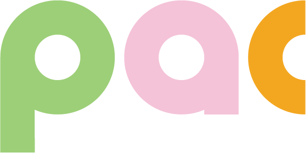
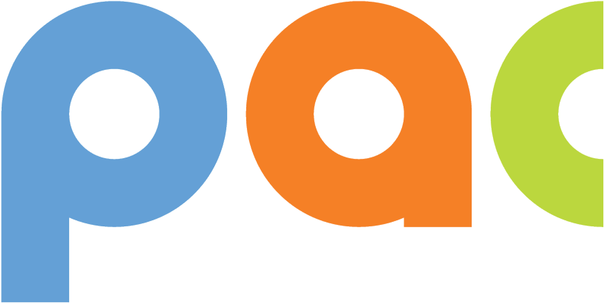
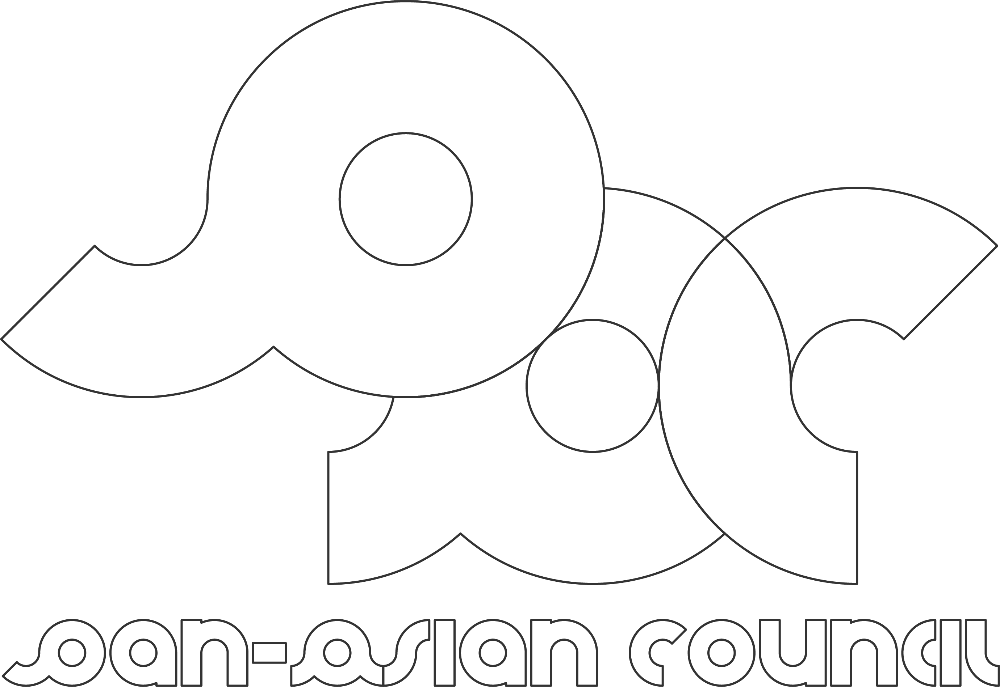
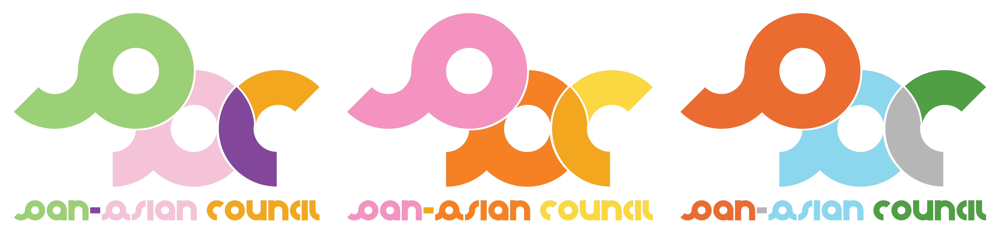

Pan-Asian Council
The Umbrella Organization for AAPI orgs at Wellesley College
Wellesley's Pan-Asian Council (PAC) oversees and works with all 16 AAPI cultural organizations on campus. As an umbrella org, it promotes awareness and care towards issues pertinent to students of Asian descent through facilitating leadership meetings, organizing community-building trainings, hosting student panels and open discussions, and collaborating with other orgs.
I spent most of my undergrad career being a part of PAC's executive board, and worked on this small project during my last semester of undergrad as a small gesture of continual support.
As PAC is more known amongst members of AAPI orgs than to the general student body, it constantly seeks ways to further visibility on campus. I chose to design a monogram logo to help tie a strong visual identity to its accustomed acronym. I ended up with two concepts for the new e-board to freely use whenever needed: a simple block monogram and an interlocking design taking shape of an elephant.
 Logo B's elephant-figured interlocking design is a cheeky ode to PAC's curiously unwitting designs found on past merch. I revamped the familiar elepant to be more intentional, connected, and animated.
 